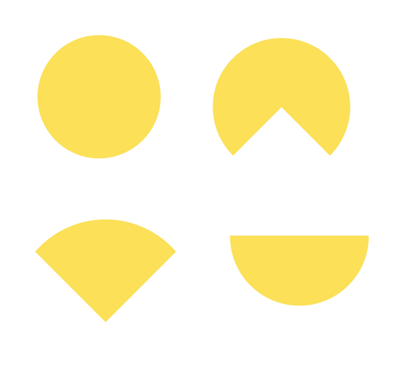
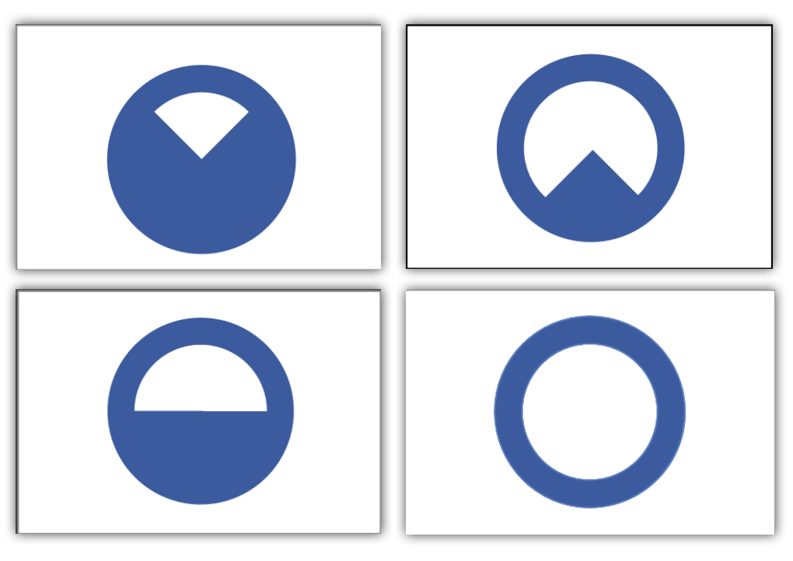

The theme of the flag was "evolution," leading to the decision to base the flags off a series of circles with differing amounts taken out of them
The final circle parts were simplified into solid planes and were changed to yellow rather than dark blue to attact more attention to them.